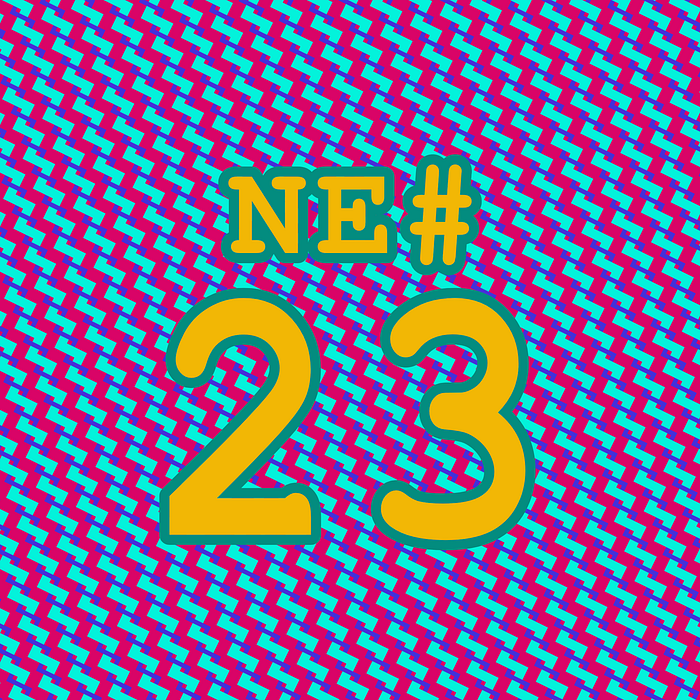

Die Nerd Enzyklopädie 23 - 30 x 10 = 1.000

Wenn du deinen Python-Nachlass mit ein wenig Pfeffer würzen willst, empfiehlt es sich, die „Definition eines Integers“ zu ändern. Wenn du in Python eine Zahl verwendest, nehmen wir die 30, verwendet Python die 30 als Referenz auf ein Objekt im Speicher, in dem wiederum der Wert 30 hinterlegt wird. Die 30 ist also ein Verweis auf ein Objekt, das den tatsächlichen Wert enthält. In der Regel sollten Verweis und Wert gleich sein, sonst wird das mit der Mathematik schwierig.
Schwierig? Das mögen Nerds doch!
Mit dieser Funktion kannst du einen derartigen Verweis anpassen und einen abweichenden Wert hinterlegen:
import ctypes
def reference(val):
return ctypes.cast(id(val), ctypes.POINTER(ctypes.c_int))
Und so aktivierst du den „Spaß“:
reference(30)[6] = 100
Willst du nun mit der Ziffer 30 mathematische Operationen durchführen, erzeugt das interessante Ergebnisse:
>>> 30 * 10
>>> 1000
Viel Spaß beim Debuggen!